Data Understanding#
Ekplorasi data iris#
korelasi antara sepal_width dan sepal_length
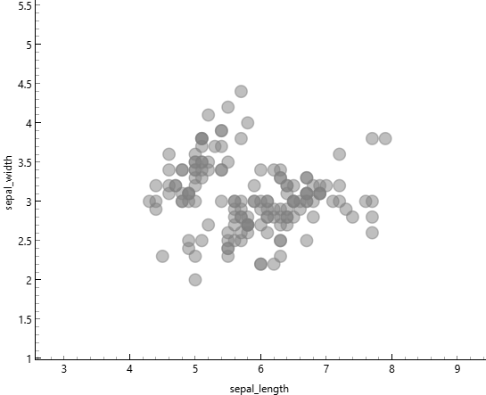
Dari gambar di atas menunjukkan korelasi antara sepal_widh dan sepal_length sangat lemah atau tidak ada korelasi, dikarenakan Titik-titik data tersebar tanpa membentuk pola yang jelas, menunjukkan bahwa tidak ada hubungan yang kuat antara sepal length dan sepal width. artinya Kedua variabel ini dapat dianggap sebagai fitur yang berdiri sendiri dan tidak saling mempengaruhi secara linear.
korelasi antara petal_width dan petal_length
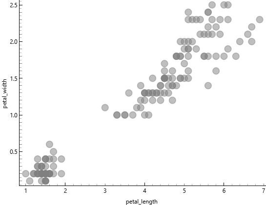
dari gambar di atas menunjukkan korelasi antara petal_width dan petal_length sangat kuat, dikarenakan Titik-titik data membentuk pola yang jelas dari kiri bawah ke kanan atas, menunjukkan bahwa semakin besar nilai petal_length, semakin besar pula nilai petal_width. artinya kedua variabel sangat rapat membentuk pola linear yang jelas. namun terdapat Dua cluster yang terpisah kemungkinan besar merepresentasikan iris yang berbeda, tetapi tidak menyebabkan ambigu.
korelasi antara sepal_length dan petal_length

Dari gambar di atas menunjukkan korelasi antara sepal_length dan petal_length sangat kuat, dikarenakan titik-titik data membentuk pola yang jelas dari kiri bawah ke kanan atas, menunjukkan bahwa semakin besar nilai sepal_length, semakin besar pula nilai petal_length. Artinya kedua variabel sangat rapat membentuk pola linear yang jelas. Namun terdapat dua cluster yang terpisah kemungkinan besar merepresentasikan iris yang berbeda, tetapi tidak menyebabkan ambigu.
korelasi antara sepal_length dan petal_width

Dari gambar di atas menunjukkan korelasi antara sepal_length dan petal_width sangat kuat, dikarenakan titik-titik data membentuk pola yang jelas dari kiri bawah ke kanan atas, menunjukkan bahwa semakin besar nilai sepal_length, semakin besar pula nilai petal_width. Artinya kedua variabel sangat rapat membentuk pola linear yang jelas. Namun terdapat dua cluster yang terpisah kemungkinan besar merepresentasikan iris yang berbeda, tetapi tidak menyebabkan ambigu.
korelasi antara sepal_width dan petal_length
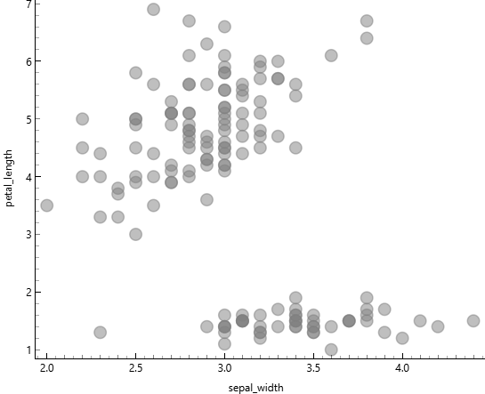
Dari gambar di atas menunjukkan korelasi antara sepal_width dan petal_length cenderung lemah, dikarenakan titik-titik data tidak membentuk pola linear yang konsisten dari kiri bawah ke kanan atas. Terlihat adanya dua cluster yang sangat terpisah secara vertikal, di mana cluster bawah memiliki petal_length rendah dan cluster atas memiliki petal_length tinggi, namun dalam masing-masing cluster tidak ada hubungan yang jelas dengan sepal_width. Artinya kedua variabel tidak menunjukkan pola yang rapat dan penyebaran data relatif acak. Dua cluster yang terpisah ini kemungkinan besar merepresentasikan spesies iris yang berbeda dengan karakteristik yang sangat berbeda, dan pemisahan yang sangat jelas ini tidak menyebabkan ambigu.
korelasi antara sepal_width dan petal_width
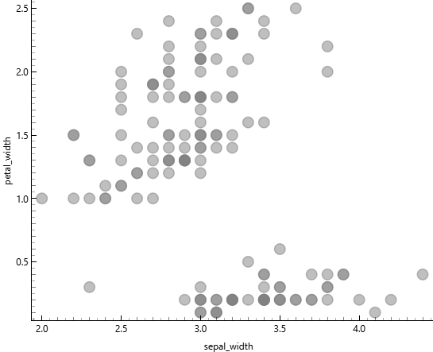
Dari gambar di atas menunjukkan korelasi antara sepal_width dan petal_width lemah atau tidak konsisten, dikarenakan titik-titik data tidak membentuk pola linear yang jelas dari kiri bawah ke kanan atas. Terlihat adanya dua cluster yang sangat terpisah secara vertikal, di mana cluster bawah memiliki petal_width sangat rendah dan cluster atas memiliki petal_width lebih tinggi, namun dalam masing-masing cluster penyebaran data relatif acak tanpa menunjukkan hubungan yang kuat dengan sepal_width. Artinya kedua variabel tidak membentuk pola linear yang rapat dan peningkatan sepal_width tidak diikuti oleh peningkatan petal_width secara konsisten. Dua cluster yang terpisah ini kemungkinan besar merepresentasikan spesies iris yang berbeda, dan pemisahan yang sangat jelas ini tidak menyebabkan ambigu.
statistik dikriptif

Berdasarkan tabel statistik deskriptif di atas, dataset Iris menunjukkan karakteristik yang menarik untuk setiap variabel pengukuran. Pada sepal_length, nilai rata-rata sebesar 5.84 cm sangat dekat dengan median 5.8 cm, mengindikasikan distribusi data yang relatif simetris dan terkonsentrasi di kisaran 5-6 cm dengan variasi yang kecil. Sementara itu, sepal_width memiliki mean 3.05 cm dengan median dan mode sama-sama bernilai 3 cm, menunjukkan bahwa lebar sepal cenderung homogen antar spesies dengan penyebaran data yang rapat. Berbeda dengan pengukuran sepal, variabel petal_length dan petal_width menunjukkan pola yang lebih kompleks. Nilai mode pada petal_length (1.5 cm) dan petal_width (0.2 cm) sangat berbeda dengan median masing-masing (4.35 cm dan 1.3 cm), yang mengindikasikan adanya distribusi bimodal atau dua kelompok data yang terpisah jelas. Hal ini diperkuat oleh nilai dispersi yang lebih tinggi pada petal_width (0.63) dibandingkan variabel lainnya, menunjukkan bahwa pengukuran petal memiliki variabilitas yang lebih besar dan lebih efektif untuk membedakan antar spesies.
python (google colab)
bukti screenshot

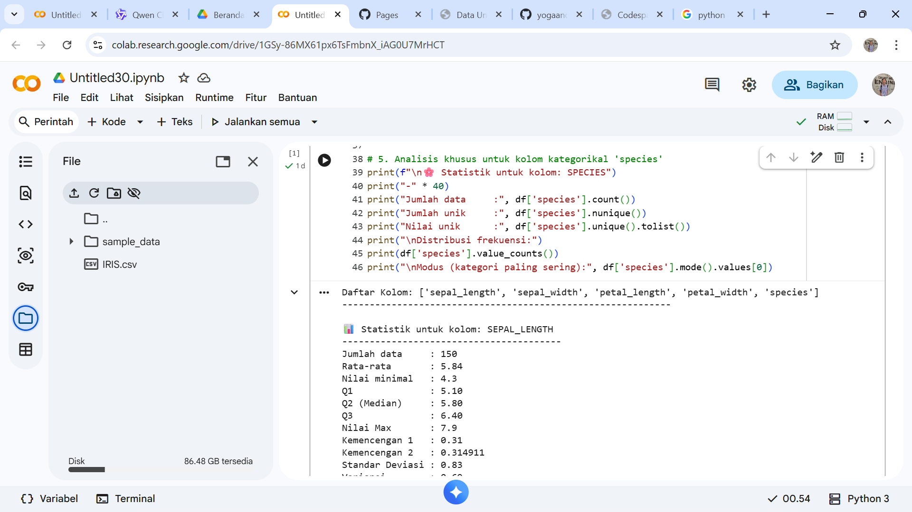
link program
https://colab.research.google.com/drive/1GSy-86MX61px6TsFmbnX_iAG0U7MrHCT?usp=sharing
kode lengkap
import pandas as pd
from scipy import stats
df = pd.read_csv("IRIS.csv")
print("Daftar Kolom:", df.columns.tolist())
print("-" * 60)
kolom_numerik = ['sepal_length', 'sepal_width', 'petal_length', 'petal_width']
for kolom in kolom_numerik:
print(f"\n Statistik untuk kolom: {kolom.upper()}")
print("-" * 40)
print("Jumlah data :", df[kolom].count())
print("Rata-rata :", "{0:.2f}".format(df[kolom].mean()))
print("Nilai minimal :", df[kolom].min())
print("Q1 :", "{0:.2f}".format(df[kolom].quantile(0.25)))
print("Q2 (Median) :", "{0:.2f}".format(df[kolom].quantile(0.5)))
print("Q3 :", "{0:.2f}".format(df[kolom].quantile(0.75)))
print("Nilai Max :", df[kolom].max())
print("Kemencengan 1 :", "{0:.2f}".format(round(df[kolom].skew(), 2)))
print("Kemencengan 2 :", "{0:.6f}".format(round(df[kolom].skew(), 6)))
print("Standar Deviasi :", "{0:.2f}".format(round(df[kolom].std(), 2)))
print("Variansi :", "{0:.2f}".format(round(df[kolom].var(), 2)))
mode_result = stats.mode(df[kolom].dropna(), keepdims=True)
if len(mode_result.mode) > 0 and not pd.isna(mode_result.mode[0]):
print("Nilai modus : {} dengan frekuensi {}".format(
mode_result.mode[0], mode_result.count[0]))
else:
print("Nilai modus : Tidak ada modus tunggal")
print(f"\n🌸 Statistik untuk kolom: SPECIES")
print("-" * 40)
print("Jumlah data :", df['species'].count())
print("Jumlah class :", df['species'].nunique())
print("nama class :", df['species'].unique().tolist())
print("\nJumlah data per class:")
print(df['species'].value_counts())
print("\nModus (kategori paling sering):", df['species'].mode().values[0])
output
Daftar Kolom: ['sepal_length', 'sepal_width', 'petal_length', 'petal_width', 'species']
------------------------------------------------------------
Statistik untuk kolom: SEPAL_LENGTH
----------------------------------------
Jumlah data : 150
Rata-rata : 5.84
Nilai minimal : 4.3
Q1 : 5.10
Q2 (Median) : 5.80
Q3 : 6.40
Nilai Max : 7.9
Kemencengan 1 : 0.31
Kemencengan 2 : 0.314911
Standar Deviasi : 0.83
Variansi : 0.69
Nilai modus : 5.0 dengan frekuensi 10
Statistik untuk kolom: SEPAL_WIDTH
----------------------------------------
Jumlah data : 150
Rata-rata : 3.05
Nilai minimal : 2.0
Q1 : 2.80
Q2 (Median) : 3.00
Q3 : 3.30
Nilai Max : 4.4
Kemencengan 1 : 0.33
Kemencengan 2 : 0.334053
Standar Deviasi : 0.43
Variansi : 0.19
Nilai modus : 3.0 dengan frekuensi 26
Statistik untuk kolom: PETAL_LENGTH
----------------------------------------
Jumlah data : 150
Rata-rata : 3.76
Nilai minimal : 1.0
Q1 : 1.60
Q2 (Median) : 4.35
Q3 : 5.10
Nilai Max : 6.9
Kemencengan 1 : -0.27
Kemencengan 2 : -0.274464
Standar Deviasi : 1.76
Variansi : 3.11
Nilai modus : 1.5 dengan frekuensi 14
Statistik untuk kolom: PETAL_WIDTH
----------------------------------------
Jumlah data : 150
Rata-rata : 1.20
Nilai minimal : 0.1
Q1 : 0.30
Q2 (Median) : 1.30
Q3 : 1.80
Nilai Max : 2.5
Kemencengan 1 : -0.10
Kemencengan 2 : -0.104997
Standar Deviasi : 0.76
Variansi : 0.58
Nilai modus : 0.2 dengan frekuensi 28
🌸 Statistik untuk kolom: SPECIES
----------------------------------------
Jumlah data : 150
Jumlah class : 3
nama class : ['Iris-setosa', 'Iris-versicolor', 'Iris-virginica']
Jumlah data per class:
species
Iris-setosa 50
Iris-versicolor 50
Iris-virginica 50
Name: count, dtype: int64
Modus (kategori paling sering): Iris-setosa
penjelasan mengukur Jarak dengan tipe data campuran#
Latar Belakang
Dalam praktik nyata, database yang digunakan untuk analisis data sering kali tidak hanya mengandung satu jenis tipe data saja, melainkan berbagai tipe data yang tercampur menjadi satu kesatuan. Sebagai contoh, sebuah dataset dapat memuat atribut nominal seperti warna atau jenis produk, atribut binary simetris seperti jenis kelamin, atribut binary asimetris seperti hasil tes medis yang bernilai Y/N, atribut numerik berupa data interval atau rasio seperti suhu atau pendapatan, serta atribut ordinal yang memiliki tingkatan atau peringkat seperti level kepuasan atau tingkat pendidikan. Karena setiap tipe data tersebut memiliki karakteristik dan cara pengukuran yang berbeda-beda, kita tidak dapat menerapkan satu rumus jarak secara langsung untuk menghitung kemiripan atau perbedaan antar objek. Sebagai solusi, pendekatan yang dapat digunakan adalah metode pembobotan, yaitu dengan menghitung jarak untuk setiap atribut secara terpisah sesuai dengan tipe datanya, kemudian menggabungkan seluruh hasil perhitungan tersebut menggunakan rumus jarak campuran yang memperhitungkan indikator validitas setiap atribut. Dengan pendekatan ini, seluruh jenis atribut dapat berkontribusi secara proporsional dalam perhitungan jarak akhir, sehingga hasil analisis menjadi lebih akurat dan mencerminkan karakteristik data yang sebenarnya.
Rumus mengukur jarak data campuran
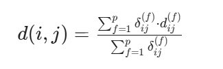
Keterangan:
| simbol | penjelasan |
| d(i,j) | Jarak antara objek i dan j |
| p | umlah total atribut |
| δ ij (f) | Indikator: 1 jika atribut ke-f valid untuk dibandingkan, 0 jika tidak (misal: data missing) |
| d ij (f) | Jarak untuk atribut ke-f saja |
Cara Menghitung d(f)ij per Tipe Atribut
1. Atribut Nominal atau Binary
ij(f) = 0, jika xif = xjf (nilai sama)
dij(f) = 1, jika xif ≠ xjf (nilai berbeda)
cara penghitungannya Menggunakan metode simple matching.
2. Atribut Numerik
Lakukan normalisasi terlebih dahulu agar skala seragam, misalnya dengan:

Mean Absolute Deviation: lebih robust terhadap outlier
Setelah dinormalisasi, hitung jarak dengan metode numerik (Euclidean, Manhattan, dll).
Atribut Ordinal
Langkah-langkah:
Ganti nilai dengan ranking r i f (misal: rendah=1, sedang=2, tinggi=3)

Hitung jarak menggunakan metode numerik pada nilai z i f
analisi mengunakan orange data mining untuk data yang campuran#
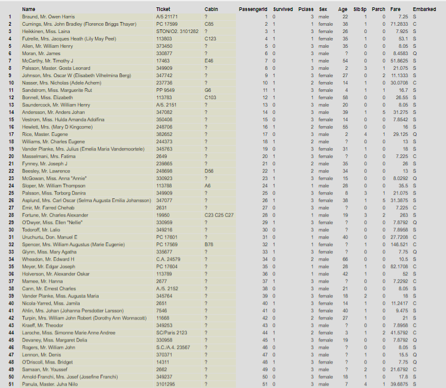
contoh data dengan tipe data campuran dimana ada 891 baris dan ada 9 fitur dalam data tersebut
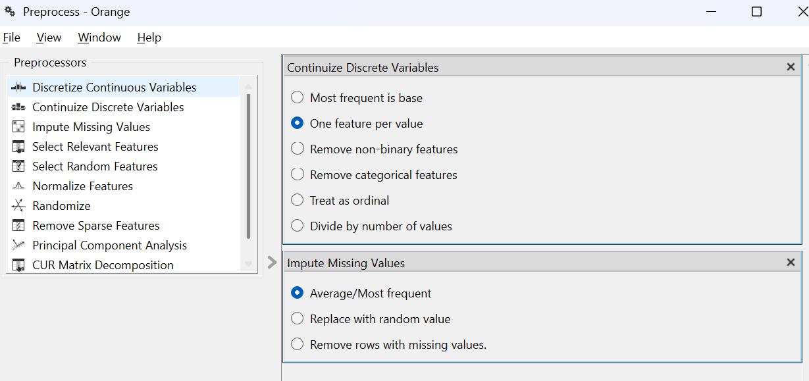
Gambar tersebut adalah proses Preprocessing data pada software Orange Data Mining sebelum menghitung jarak atau melakukan analisis pada dataset Titanic Dataset. Preprocessing diperlukan karena data Titanic memiliki data campuran (numerik dan kategorikal), sehingga harus diolah terlebih dahulu agar bisa digunakan dalam algoritma data mining.
Continuize Discrete Variables
Pengaturan ini digunakan untuk mengubah data kategorikal menjadi numerik. Pada dataset Titanic terdapat data kategorikal seperti Sex (male / female), Embarked (S, C, Q), Pclass (kelas 1,2,3). Karena algoritma pengukuran jarak hanya bisa menghitung angka, maka data tersebut diubah menjadi numerik
Impute Missing Values
Fitur ini digunakan untuk mengisi data yang kosong (missing value). Dalam dataset Titanic terdapat data kosong pada age dan cabin
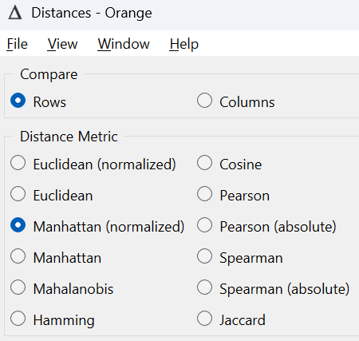
Widget Distances digunakan untuk menghitung matriks dissimilarity (jarak) antar objek dalam dataset. arameter Compare diset ke Rows yang berarti perhitungan jarak dilakukan antar objek/data point (baris dalam dataset), bukan antar atribut. Hal ini sesuai dengan konsep matriks dissimilarity, dimana matriks segitiga dihasilkan dari perhitungan jarak antar n titik data. Metric jarak yang dipilih adalah Manhattan (normalized) karena data yang saya pakai memiliki data campuran
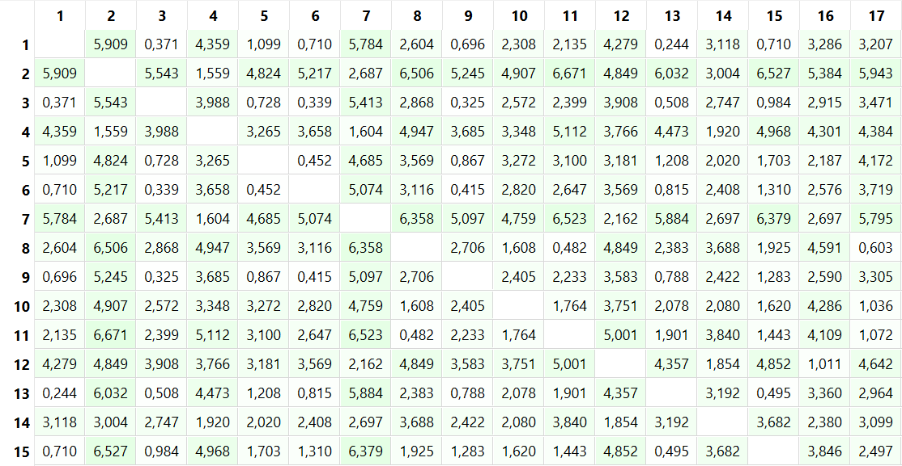
gambar di atas merupakan hasil dari pengkuran jarak dari tipe data campuran.
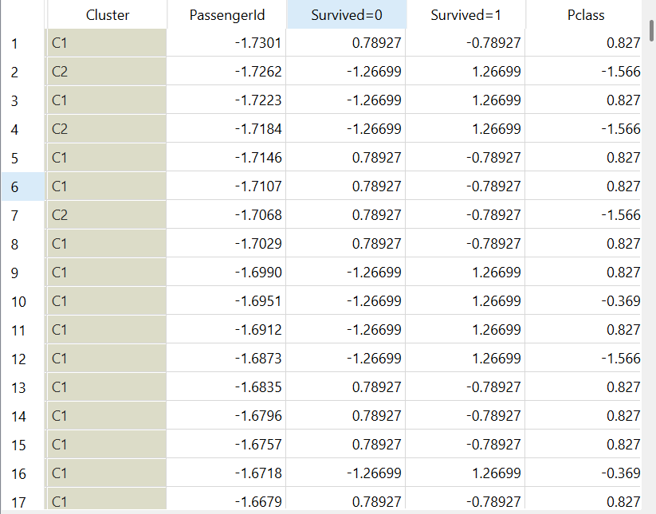
Berdasarkan dendrogram, hierarchical clustering dilakukan dengan metode linkage Ward dan menghasilkan 4 cluster optimal. Pemotongan dendrogram dilakukan pada ketinggian tertentu sehingga diperoleh:
Cluster 1: sejumlah X customer, Cluster 2: sejumlah X customer, Cluster 3: sejumlah X customer, Cluster 4: sejumlah X customer,
Metode Ward linkage dipilih karena mampu menghasilkan cluster yang lebih kompak dengan meminimalkan varians dalam setiap cluster.
implementasikan data iris untuk mengukur jara di orange#
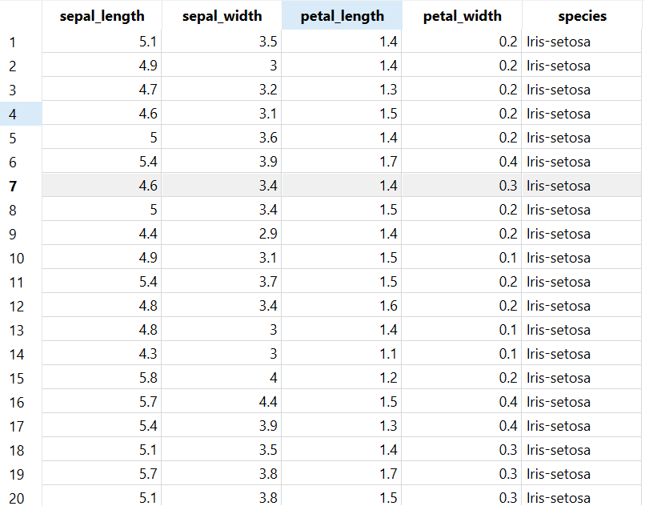
gambar diatas merupakan sebagian data mentah dari iris untuk diimplementasikan dalam menghitung jarak

gambar di atas merupakan hasil dari menghitung jarak pada data iris dimana prosesnya sama dengan yang tadi

gambar di atas merupakan visualiasi pengukuran jarak pada orange, tetapi sementara saya menggunakan widget csv file impor untuk mengimpor data iris bukan menggunakan sql table karena widget tersebut masih ada erornya atau tidak bisa di pakai dan belum menemukan solusinya